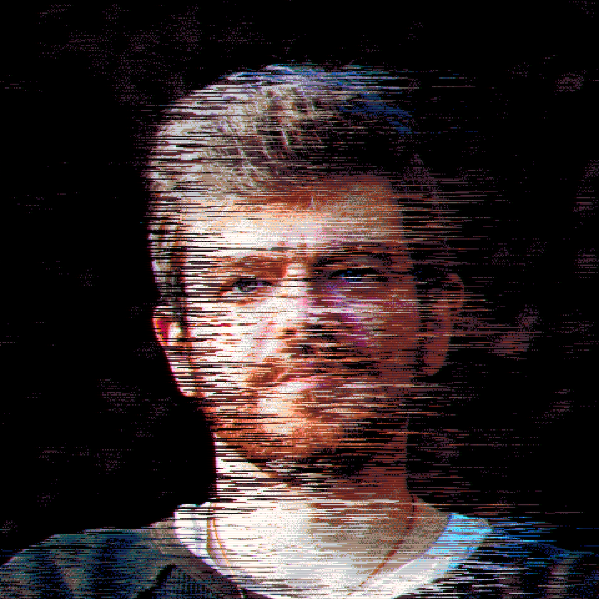

Workshop on Automated Game Design
November 9–10, 2026 · A workshop of AIIDE 2026 Federal University of Minas Gerais · Belo Horizonte, Brazil
The goal of the Workshop on Automated Game Design (WAGD) is to provide a home for advancing the conversation and state-of-the-art in automated game design (AGD).
Why AGD Now?
Game design is increasingly becoming malleable — something that players engage with themselves, something that is procedurally generated and varied, and something that is fluid and always changing. The popularity of game-making tools like Fortnite Creative and Mario Maker, as well as the existence of popular ROM-hacking and randomizer communities, has encouraged an influx of people to play with game-making, which makes the study and understanding of game design and its underlying processes more important than ever. Daily challenges and roguelike variation now often reconfigure fundamental aspects of a game’s design as it is played, making it important to build better tools to understand and predict dynamic systems with an incomprehensible number of potential outcomes. The ubiquity of live access, games-as-a-service, and early access models means that even without runtime modifications, game designs are constantly in flux — creating an opportunity for researchers to study how intelligent systems and tools can understand and support designers working in these rapidly-changing game design spaces.
Beyond this, AGD is a forward-looking, exciting blue-sky research space that aims to open up entirely new ways to play and create games. AGD carves a unique space for designers and researchers to explore how we build systems that produce surprising and diverse game artifacts. AGD lets us explore the tooling at design- and run-time that pushes the envelope of what styles of game design and player engagement are possible. AIIDE is an ideal venue for such a workshop: it has historically been a home for AGD research, forming a conversation between maximalist approaches to automated game design and more specific game AI, mixed-initiative tooling, and procedural content generation research. Hosting this workshop can help turn up the volume of this conversation.
Want an easy introduction into the field? Let Mike Cook give you a quick overview:
Get Involved
We are now accepting submissions — and not just papers. Alongside peer-reviewed papers, we welcome demos, playable prototypes, and interactive activities you’d like to run with the room. Demos need only an abstract and a link to the artifact.
Interested in joining, but not submitting anything at all? You are still welcome! Between presentations and collaborative design sessions, there is still a lot to offer. In-person attendance is required for workshop participation.
Please send any questions to samuel.m.shields@gmail.com.
Schedule
Monday, November 9th & Tuesday, November 10th, 2026
We plan on having three major sections to the workshop over two days:
- Keynote Address An invited talk from a leader in the field — see Keynote Speakers.
- Paper Presentations Presentations of accepted peer-reviewed work.
- Collaborative Demo/Jam Session Hands-on, collaborative design and demo time.
Stay tuned for specifics closer to the workshop!
Keynote Speakers
Invited talks at WAGD 2026
Michael Cook

King’s College London, Department of Informatics
Talk: To be announced
Mike Cook is an AI researcher and game designer, currently working as a Senior Lecturer at King's College London. He is the designer of the AGD systems ANGELINA and Puck, and the founder of PROCJAM, the Procedural Generation Jam. He was very briefly a world record speedrunner for a game about flipping coins.
Tanya X. Short
Kitfox Games
Talk: To be announced
Tanya X. Short is the Captain of Kitfox Games and game designer of Streets of Fortuna, Boyfriend Dungeon and Moon Hunters, as well as the publishing head, overseeing publishing games like Dwarf Fortress and Caves of Qud. Her first job in the industry was as a production assistant in the Halo 2 marketing campaign in 2003, “ilovebees”. She’s also the co-founder and co-director of Pixelles, a feminist non-profit aiming to change games culture, and co-founded the Polaris Game Design Retreat. She also edited two textbooks with CRC Press, Procedural Generation in Game Design and Procedural Storytelling in Game Design.
Call for Papers
Submission deadline: September 18th, 2026 (AoE)
What You Can Submit
WAGD accepts two kinds of submission, and both get time in front of the room.
Papers. Peer-reviewed and published in the CEUR-WS proceedings for WAGD 2026. Short papers run 5–9 standard pages, full papers 10 or more, references and appendices included. A standard page is 2,500 characters.
Demos and interactive activities. Playable prototypes, generators, tools, installations, or an activity you’d like to run with attendees. These require only an abstract (roughly 250–500 words) and a link to the artifact — we evaluate the work itself rather than a write-up of it. If your generator makes something surprising, we would rather see it run than read about it.
Accepted demos can appear in the proceedings too: we collect descriptions of accepted demos into a single consolidated paper published alongside the rest of WAGD 2026. Taking part is optional, and we’ll invite you after acceptance — submitting a demo never requires writing a paper.
Submitting Your Work
Papers can be anything related to the field of AGD. This includes theory and vision papers, lofi/hifi prototype descriptions, and evaluations of AGD systems. We encourage maximalist approaches; AGD systems often sum many disparate pieces together. Don’t be afraid to be messy or over-scoped. Papers focused on large pretrained generative models are discouraged due to cost barriers, replicability concerns, and sufficient existing coverage at other venues.
All papers must use one of the following templates:
- CEURART.zip (LaTeX template)
- Overleaf Template
All submissions — papers and demos alike — are peer reviewed, and both are due September 18th, 2026. Works will be judged on their technical and research contributions, accessibility, replicability, and impact. Accepted papers are published in the CEUR-WS proceedings for WAGD 2026. Submissions of both kinds should be made through EasyChair, under the Automated Game Design 2026 track.
Not sure your work fits either track? Send it anyway, or email us first — we would rather see something half-built and interesting than nothing at all. And if you’d simply like to attend without submitting, register anyway! All are welcome to come and learn more about AGD.
Examples of Relevant Topics
Below is a (non-exhaustive) list of topics we are looking for:
- Languages and formalisms for describing game design spaces. See VGDL (Ebner et al., 2013) or Cygnus (Summerville et al., 2017).
- Automated systems that design physical or digital games. See Ludi (Browne, 2008) or ANGELINA (Cook, Colton and Gow, 2016).
- Approaches for evaluating unseen games or spaces of games. Includes evaluating large design spaces for playability, balance, or emergence. See Expressive Range Analysis (Smith and Whitehead, 2010).
- Mixed-initiative approaches to automated game design. See Tanagra (Smith, Whitehead, and Mateas, 2010) or Sentient Sketchbook (Liapis, Yannakakis, and Togelius, 2013).
- Studies or surveys of automated game design or similar works in commercial games. See Mosa Lina (Steele, 2023) or Caves of Qud (Freehold Games, 2024) as example games to analyze.
- Novel methods or combinations of methods for automated game design. See WaveFunctionCollapse (Karth and Smith, 2017).
- Automated generation of game mechanics, rules, or progression systems. See Zook and Riedl’s work on RPG and Platformer games (Zook and Riedl, 2014).
- Self-modifying game systems that change over time, either through engagement with players, a larger metagame, or story progression. See Galactic Arms Race (Hastings, Guha, and Stanley, 2009).
- Systems that generate games scoped within a single platform or genre. See Karth et al.’s work on Game Boy RPGs (Karth et al., 2021), or BrawlerAGD (Shields et al., 2022).
- Orchestration of multiple distinct creative facets or modalities. See Liapis et al.’s work defining orchestration as a central challenge for AGD research (Liapis et al., 2019).
- Code-level AGD: synthesizing human-readable and human-editable code (within the context of an existing codebase) as an AGD approach. See Butler et al.’s work on program synthesis for boss behavior generation (Butler, Siu, and Zook, 2017) and Cook’s work on AGD-friendly software design patterns (Cook, 2020).
- Techniques for inventing good game goals. See Davidson et al.’s work on searching for human-like goals in open-ended play environments (Davidson et al., 2025).
Key Dates
| Submissions Open | June 18th, 2026 |
| Submission Deadline | September 18th, 2026 |
| Review Deadline | September 25th, 2026 |
| Submission Notifications | October 2nd, 2026 |
| Publication-Ready Submission Due | October 16th, 2026 |
| Workshop | November 9th–10th, 2026 |
All deadlines are at 11:59 PM AoE (Anywhere on Earth).
Questions on submissions, want guidance, or not sure if you’re a fit? Send an email to samuel.m.shields@gmail.com.
References
- Browne, C. B. (2008). Automatic generation and evaluation of recombination games (Doctoral dissertation, Queensland University of Technology). [LINK]
- Butler, E., Siu, K., & Zook, A. (2017, August). Program synthesis as a generative method. In Proceedings of the 12th International Conference on the Foundations of Digital Games (pp. 1-10). [LINK]
- Cook, M. (2020, August). Software engineering for automated game design. In 2020 IEEE Conference on Games (CoG) (pp. 487-494). IEEE. [LINK]
- Cook, Michael, Simon Colton, and Jeremy Gow. "The angelina videogame design system—part i." IEEE Transactions on Computational Intelligence and AI in Games 9.2 (2016): 192-203. [LINK]
- Davidson, G., Todd, G., Togelius, J., Gureckis, T. M., & Lake, B. M. (2025). Goals as reward-producing programs. Nature Machine Intelligence, 7(2), 205-220. [LINK]
- Ebner, M., Levine, J., Lucas, S. M., Schaul, T., Thompson, T., & Togelius, J. (2013). Towards a video game description language. [LINK]
- Freehold Games. (2024). Caves of Qud (Version 1.0) [Video game]. https://www.cavesofqud.com/ [LINK]
- Hastings, E. J., Guha, R. K., & Stanley, K. O. (2009). Automatic content generation in the galactic arms race video game. IEEE Transactions on Computational Intelligence and AI in Games, 1(4), 245-263. [LINK]
- Karth, I., Duplantis, T., Kreminski, M., Kashyap, S., Kukutla, V., Lo, A., ... & Smith, A. M. (2021). Generating playable rpg roms for the game boy. [LINK]
- Karth, I., & Smith, A. M. (2017, August). WaveFunctionCollapse is constraint solving in the wild. In Proceedings of the 12th International Conference on the Foundations of Digital Games (pp. 1-10). [LINK]
- Liapis, A., Yannakakis, G. N., Nelson, M. J., Preuss, M., & Bidarra, R. (2018). Orchestrating game generation. IEEE Transactions on Games, 11(1), 48-68. [LINK]
- Liapis, A., Yannakakis, G. N., & Togelius, J. (2013). Sentient sketchbook: computer-assisted game level authoring. [LINK]
- Smith, G., & Whitehead, J. (2010, June). Analyzing the expressive range of a level generator. In Proceedings of the 2010 workshop on procedural content generation in games (pp. 1-7). [LINK]
- Smith, G., Whitehead, J., & Mateas, M. (2010, June). Tanagra: A mixed-initiative level design tool. In Proceedings of the Fifth International Conference on the Foundations of Digital Games (pp. 209-216). [LINK]
- Steele, L. (2023). Mosa Lina [Video game]. Lawrence Steele. https://store.steampowered.com/app/2116860/Mosa_Lina/ [LINK]
- Summerville, A., Martens, C., Harmon, S., Mateas, M., Osborn, J., Wardrip-Fruin, N. and Jhala, A., 2017. From mechanics to meaning. IEEE Transactions on Games, 11(1), pp.69-78. [LINK]
- Zook, A., & Riedl, M. (2014, June). Automatic game design via mechanic generation. In Proceedings of the AAAI Conference on Artificial Intelligence (Vol. 28, No. 1). [LINK]
Committee
The WAGD 2026 organizing committee
Samuel Shields (Primary)
IDEO; Shields Games and Research LLC
Sam Shields is a Game Design Research Lead at IDEO and a recent PhD graduate from UCSC’s Computational Media department. Sam’s passions lie in understanding, designing, and implementing interlocking game systems that are expressive and surprising. He’s deeply curious about investigating “metadesign” (how we design design systems) for games. Some of his relevant prior work involves generating fighting games while tuning their properties to be competitively balanced (BrawlerAGD) and having an AI director try and tune a turn-based RPG for different audiences (FighterDDA). He’s an Esper mage and is currently going through a ska phase.
Max Kreminski

Cornell Tech
Max Kreminski is a creativity support tools researcher and assistant professor of Design Tech at Cornell Tech, making interactive software systems that enable new forms of playful exploration in creative domains. Their AGD work has focused on human-AI interaction design (Germinate); incorporating narrative into AGD (StoryAssembler, GBS); and authoring support for open-ended interactive stories (Dramamancer, Elsewise, Bonsai). Although conceptually skeptical of games and automation, Max is nevertheless a big fan of design.
Lana Rossato
Federal University of Rio Grande do Sul
Lana Rossato is a PhD student in Computer Science at the Federal University of Rio Grande do Sul (UFRGS), Brazil. Her research focuses on Artificial Intelligence for Games, particularly Automatic Game Design, Procedural Content Generation, and Computational Creativity. She is interested in developing systems capable of generating, evaluating, and adapting games autonomously, with an emphasis on symbolic AI techniques.
Michael Cook
King’s College London, Department of Informatics
mike.cook@kcl.ac.uk / mike@possibilityspace.org
Mike Cook is an AI researcher and game designer, currently working as a Senior Lecturer at King's College London. He is the designer of the AGD systems ANGELINA and Puck, and the founder of PROCJAM, the Procedural Generation Jam. He was very briefly a world record speedrunner for a game about flipping coins.
Rachel Heleva
University of California, Davis; The Museum of Art and Digital Entertainment
Rachel Heleva is a PhD student in Performance Studies at UC Davis and a member of the Social Intelligence and Narrative in Games Lab. Her research focuses on computational poetics and AI systems for storytelling and interpretation, especially playable systems that use rules, constraints, and variation to make interpretive reasoning part of play. She is also the Executive Director of the Museum of Art and Digital Entertainment in Oakland where she leads public work in access to game design education and AI literacy.